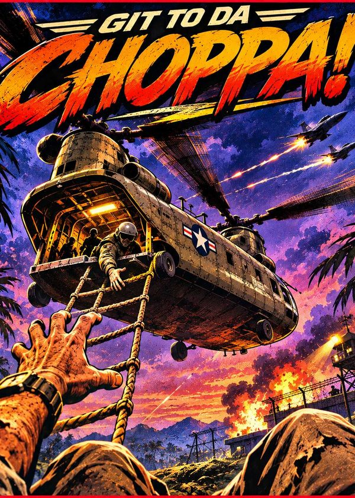

GIT TO DA CHOPPA!

Game
Git to da Choppa!
Apple II rescue tribute
A love letter to the 1982 Apple II classic. Rescue hostages from the enemy and fly them home to base.
A love letter to the Apple II classic Choplifter. Not affiliated with or endorsed by its owners.
▶ PLAY🎮 Controls
- Desktop
- Arrow keys / WASD to fly, Space to shoot, Z to change facing, P to pause. M, or the COLOUR button, switches between the colour picture and a green-phosphor monitor.
- Mobile
- On-screen joystick + Fire/Face buttons. Optional motion controls (tap MOTION, calibrate, tilt to fly).